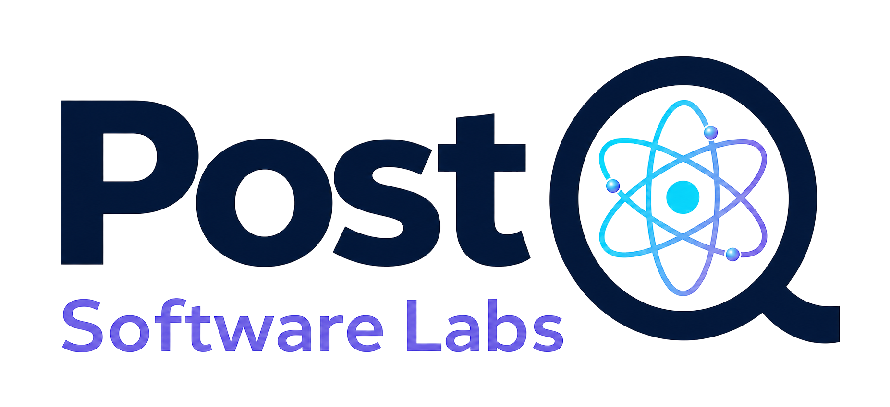

01
Cryptography Visibility
Understanding where and how cryptography is used across systems, applications, and workflows.

PostQ Software Labs
Post-quantum transition intelligence
We are building practical systems that help organizations discover cryptographic exposure, plan migration paths, and execute a controlled move toward post-quantum security.
Why it matters
Quantum computing changes the risk profile of long-lived data and cryptographic infrastructure.
Why now
Early preparation gives teams time to reduce dependency risk without disruptive remediation cycles.
Why PostQ
We focus on making the transition measurable, governed, and operationally realistic.
PQV Goal
01
Understanding where and how cryptography is used across systems, applications, and workflows.
02
Designing environments that can adapt as cryptographic standards and implementation requirements evolve.
03
Evaluating third-party software, hardware, and supply chain constraints that affect migration readiness.
04
Supporting phased rollouts, hybrid cryptography, and practical execution planning across environments.
05
Establishing ownership, policy structure, and long-range planning for post-quantum transition programs.
06
Enabling a phased transition from current cryptographic systems to quantum-safe standards with lower operational friction.
A specialized operating system for PQC migration rather than a generic workflow or isolated scan.
Repeatable modernization model for PQC programs
Evidence-driven sequencing and prioritization
Bind owners, teams and dependencies to execution
Multi-dimensional discovery beyond one crypto surface
Board-ready visibility and audit evidence
Reusable delivery platform for consulting teams
About the Name
PostQ represents the move toward post-quantum security, where systems are designed to remain dependable in the presence of quantum-capable threats.
Software Labs reflects continuous exploration, experimentation, and practical engineering for real-world transition challenges.